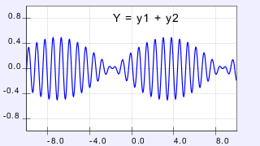

This illustration presents two new concepts when dealing with waves. Previously students have dealt with the superposition of two waves traveling in opposition directions. Here, the waves are traveling in the same direction. This simulation calculates the group and phase velocities for the superposition, and explains how these pertain to observable phenomena.